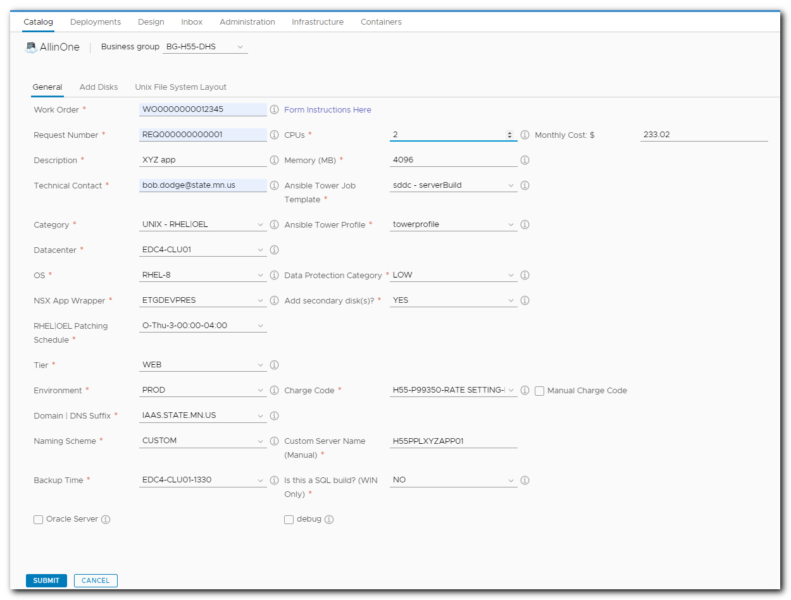
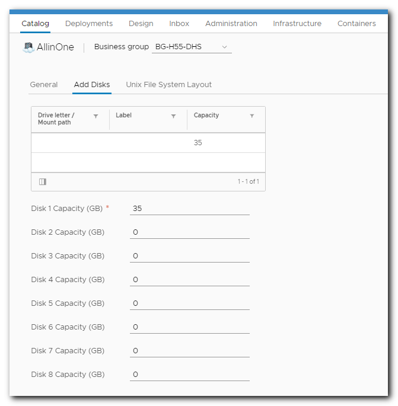

UNIX RHEL OEL Virtual Machine Provisioning¶
Description¶
Using MNIT vRA to self-provision MNIT Cloud (on-prem) virtual machine resources.
Prerequisites¶
- Access to vRA with VM builder rights
- A submitted Remedy virtual server build request
- One per server
Provision Procedure¶
Note: The VM build forms will show annoying spinners on some dynamic fields for a short period that will prevent using those fields until the dynamic processing is complete. Either wait or begin to fill out available static fields. As fields are completed, dynamic spinners will return for some fields.
- 'LOGON' to vRA
- CATALOG tab
- SEARCH for "allinone" in the catalog search just above the list of catalog items
- Do not use the "On Behalf of:" or other searchs found on the page
- REQUEST
- SELECT BUSINESS GROUP (agency)
- COPY PASTE Work Order from Remedy ticket
- COPY PASTE Request Number from Remedy ticket
- COPY PASTE Purpose/Function Designator from Remedy ticket
- COPY PASTE Technical Contact (@state.mn.us addresses allowed) from Remedy ticket
- SELECT UNIX-RHEL|OEL category
- SELECT DATACENTER
- If customer is not requesting a specific datacenter, then accept the default
- SELECT OS as requested in Remedy ticket
- SELECT 'NSX' wrapper
- SELECT RHEL| OEL PATCHING as requested in Remedy ticket
- SELECT TIER as requested in Remedy ticket
- SELECT ENVIRONMENT as requested in Remedy ticket
- SELECT DNS SUFFIX as requested in Remedy ticket
- SELECT NAMING SCHEME
- 'Generated' - Used for Dev test builds and special cases where an auto-generated name makes sense.
- 'Custom' - Most customers request this option by supplying a server name of their preference in the Remedy ticket. As of this writing, ALL production VM provisioning is to be done with the Custom naming scheme.
- COPY PASTE Custom Server Name from Remedy ticket
- First 6 characters of custom server name must match agency, tier, and environment field selections
- SELECT BACKUP TIME
- If customer does not request a specific time, select one randomly
- SELECT CPUs as requested in the Remedy ticket
- SELECT MEMORY as requested in the Remedy ticket
- Requests over certain resource thresholds will automatically trigger an approval request to the Virtualization Team. See 'Jumbo Approvals'.
- SELECT ANSIBLE TOWER JOB TEMPLATE as required for request.
- Not currently specified in Remedy request. Determined by Unix support team.
- LEAVE ANSIBLE TOWER PROFILE at default
- SELECT DATA PROTECTION CATEGORY as requested in Remedy ticket
- SELECT ADD SECONDARY DISK(s) if requested in Remedy ticket
- Selecting YES will popup an 'Add Disks' tab to configure extra disks
- RHEL OEL provisions require a secondary disk of at least 35GB. The form defaults with a 35GB secondary disk that can be expanded as necessary. More secondary disks may be added as requested.
- SELECT CHARGE CODE as requested
- Manual Charge Code option is for cross-agency builds
- Example: MNIT Enterprise G46 is requesting a build for a customer agency and the requested Charge Code is not available in the visible charge code pull down list
- SQL BUILD? set to NO
- SUBMIT
- DEPLOYMENTS tab to view deployment progress
- RHEL OEL deployment time estimate: 10-20 minutes
Deployment Failure Handling¶
If a deployment encounters a failure, review the link for more information.
Provision Notes/Details¶
- Field Informational Details
- Field Validation
- Debug Option
- Dev vs Test Server Naming
- Builder Access Rights
- Jumbo Provision Approvals
- Resubmission Options
Agency Provisioning Readiness Status¶
RHEL OEL Provision Screenshot Examples¶
Example of completed RHEL 8 provision form 
Example of RHEL Disk Add tab 